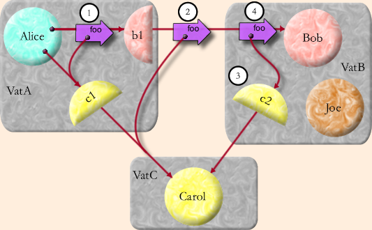

| |
Capabilities
As A |
||||||
First we explain a simplified version of the E's communications protocol, Pluribus, identical from a security point of view, but less efficient. The purpose of Pluribus is to provide the Granovetter Operator, with all its implied security properties, even when Alice, Bob, and Carol are on separate machines.
Distributed Objects
Objects are aggregated into units called vats. Each E object exists in exactly one vat -- we speak of an object being hosted by its vat. A vat typically hosts many objects. Similarly, each vat exists on one machine at a time, but a machine may host many vats. A good first approximation is to think of a vat as a process full of objects -- an address space full of objects plus a thread of control. Unlike a typical OS process, a vat persists (that is, its state is saved to persistent storage when its hosting process is terminated or interrupted), so think of a vat-hosting OS process as an incarnation of a vat. The vat maintains its identity and state as it passes serially through a sequence of incarnations.

To enable objects in separate vats to send messages to each other, we must bridge from the world of local, intra-address-space language-implementation technology to the world of network communications protocols. Our first step is conventional: each vat contains a communications system allowing it to make connections to, and accept connections from, other vats. Each vat's communications system contains objects called proxies (shown by half circles in the figure above). When an object in a vat refers to an object in a different vat, it actually refers to a proxy object, which is the local representative of the remote object. In the illustration, when a proxy (b1) is sent a local message (step 1), it encodes the message arguments (c1) into a packet which it sends out as a network message (step 2). When VatB receives the network message, it decodes it into a message local to VatB, handshaking with remote vats (VatC) as necessary to create the needed proxies (c2, step 3). The decoded message is finally delivered to Bob (step 4).
The description so far applies equally well to many distributed object systems, such as CORBA and RMI, that have no ambitions to capability security. What more do we need to make this into a secure protocol? (See also [Donnelley76, Donnelley81, Tanenbaum86, Sansom86, Doorn96, Close99])
Cryptographic Capabilities
On creation, each vat generates a public/private key pair. The fingerprint of the vat's public key is its vat Identity, or VatID. What does the VatID identify? The VatID can only be said to designate any vat which knows and uses the corresponding private key apparently according to the protocol.
Within a single vat, a capability-arrow is implemented as a traditional memory address pointer. Capability security within an address space is built out of safe language techniques (made popular by Java, but going back to LISP 1.5 and ALGOL 60). A capability-arrow can also go between vats. If Alice, Bob, and Carol are in three separate vats, then Alice can talk to Carol only because VatA can talk to VatC. An inter-vat data connection is secure and authenticated. We care about inductive correctness -- assuming a preexisting secure connection between Alice and Bob, and another between Alice and Carol, can we establish a similarly secure connection between Bob and Carol?
When VatC first exported, across the vat boundary, a capability to access Carol, VatC assigned an unguessable randomly chosen number to Carol. We call this a "Swiss number", since it has the knowledge-is-authority logic loosely attributed to Swiss bank accounts. When VatA first received this capability, VatA thereby came to know Carol's Swiss number and VatC's VatID.
When Alice sends Bob a reference to Carol, VatA tells VatB Carol's Swiss number and VatC's VatID. VatB now wishes to obtain the tail of a vat-crossing capability-arrow referring directly to Carol, so that it may deliver this arrowtail to Bob. VatB first contacts an alleged VatC (using location routing/hint information which Pluribus allows to be communicated along with the VatID) and asks it for VatC's public key. It verifies that this key matches the fingerprint that (it was told) is VatC's VatID. The handshake logic then proceeds along the lines of SSL (though without certificates, and with perfect forward secrecy): VatC proves her knowledge of the corresponding private key, then Diffie-Hellman key agreement leads to a shared session key for the duration of the inter-vat connection. Only once an authenticated, secure data pipe is set up between them does VatB reveal Carol's Swiss number to VatC, enabling VatC to associate messages, sent inside VatB to the proxy c2 and then encoded over the network to VatC, with Carol.
A capability is an arrow, and an arrow has two ends. There is an impostor problem in both directions. The VatID ensures that the vat Bob is speaking to is the one hosting the object Alice meant to introduce him to. The Swiss number ensures that the entity allowed to speak to Carol is the one Alice chose to enable to do so.
Subjective Aggregation
--or--
Only Trust Makes Distinctions
Although correct, there's something peculiar in the above description. On the one hand, the analysis seems to assume that we aren't trusting VatB, which is why Carol's Swiss number isn't revealed to VatB until someone reveals it to an object, such as Bob, which is hosted by VatB. On the other hand, Alice's intention is to give Bob access to Carol, but not to give this access to any other objects, such as Joe, that might be hosted by VatB. However, Alice must trust that VatB plays by these rules, since Alice, by sending it Carol's Swiss number, has enabled it to do otherwise.
There are two forms of mutual suspicion simultaneously supported by this protocol: inter-vat (or inter-machine) mutual suspicion, and inter-object mutual suspicion. It would be a mistake for anyone to trust Bob any more than they trust VatB. To the objects within a vat, their hosting vat is their Trusted Computing Base (TCB). Their own operation is completely at the mercy of their TCB, with no escape. Bob's behavior can be seen as an aspect of VatB's behavior.
Only if Alice trusts VatB to behave properly -- that is, as if it is actually hosting separate objects interacting with each other by capability rules -- does it make sense for Alice to even reason about Bob as being in any way separately trusted from Joe. If Alice does not trust VatB, then Alice should reason about VatB as a single conspiring group of objects pretending to be several separately trustable objects. Alice should represent her suspicion by modeling VatB simply as a monolithic composite, and all its externally accessible objects (such as Bob and Joe) as facets of this composite. Notice that Pluribus grants VatB, considered either as a malicious vat or as a monolithic composite, exactly the authority it should receive according to capability rules.
Put another way, mistrust of a vat is equivalent to ignorance of the internal relationships among the objects hosted by that vat. A malicious vat hosting one set of objects can only cause external effects equivalent to a correct vat hosting some different (maliciously coded) set of objects. This is the main economy of the distributed capability model: we can, without loss of generality, reason as if we are only suspicious of objects.
The capability model, by limiting authority within the transitive connectivity of graphs, allows a participant to subjectively aggregate arbitrary sets of objects into composites. Given the same graph of objects, different participants will employ different aggregations according to their own subjective ignorance or suspicions, as we have seen, or merely their own lack of interest in making finer distinctions. Capabilities are the only security model that simultaneously supports the economy of aggregation and the necessary subjectivity in deciding how to aggregate.
A fully paranoid actor should indeed assume the entire world is a monolithic conspiracy against them. Only with some trust that parts of the world are independent can we gain evidence of any other hypothesis.
Payment in the Crypto Protocol
We now revisit the payment example from the Capability Security section, describing the behavior of the underlying Pluribus cryptographic protocol. Assume that Alice, Bob and the mint are hosted by three separate vats (VatA, VatB and VatM) on three separate machines.
First Alice sprouts a new purse from her main purse, and transfers $10 into it:
def paymentForBob := aliceMainPurse.sprout() value: <has 0 Carol bucks>
This statement causes Alice's vat (VatA) to send a message to the mint's vat (VatM). The message includes the Swiss number of aliceMainPurse and the operation sprout. VatM creates a new object as a result of the message and sends its Swiss number back to Alice.
paymentForBob.deposit(10, aliceMainPurse)
VatA sends another message to VatM including the Swiss number of the newly created paymentForBob purse and the deposit request. The parameters are the immutable number 10 and the Swiss number of aliceMainPurse. VatM performs the requested operation and returns a null to indicate that the request succeeded.
Then Alice sends a foo message to Bob, providing the purse containing $10 as payment.
bob.foo(..., paymentForBob, ...)
VatA sends a message to Bob's vat (VatB) passing the Swiss number of the bob object and the operation foo. The parameters include the Swiss number on VatM of the paymentForBob object, and the VatID of VatM. This information will allow VatB to make a connection to VatM and use the paymentForBob object.
When Bob performs the deposit operation:
bobMainPurse.deposit(10, payment)
VatB builds the connection to VatM. The connection building process checks that VatM has the private key corresponding to the VatM VatID. After the connection has been authenticated and secured, VatB sends a deposit message to the object with the Swiss number of bobMainPurse passing 10 and the Swiss number of the purse he received from Alice.
Generic Protocols, Reusable Security
Cryptographic protocol design is hard and error prone [Schneier96]. When we can, we should design generic protocols that implement highly reusable security abstractions.
The messages sent between the Alice, Bob, and the mint above are like those that might have been part of a simple cryptographic payment protocol. However, rather than having to design a specialized cryptographic protocol for payment, we have instead reused a generic cryptographic protocol, implementing only distributed capabilities, in combination with a simple specialized object protocol to yield the same effect.
Unless stated otherwise, all text on this page which is either unattributed or by Mark S. Miller is hereby placed in the public domain.
| |
|
report bug (including invalid html)
|
||||||||